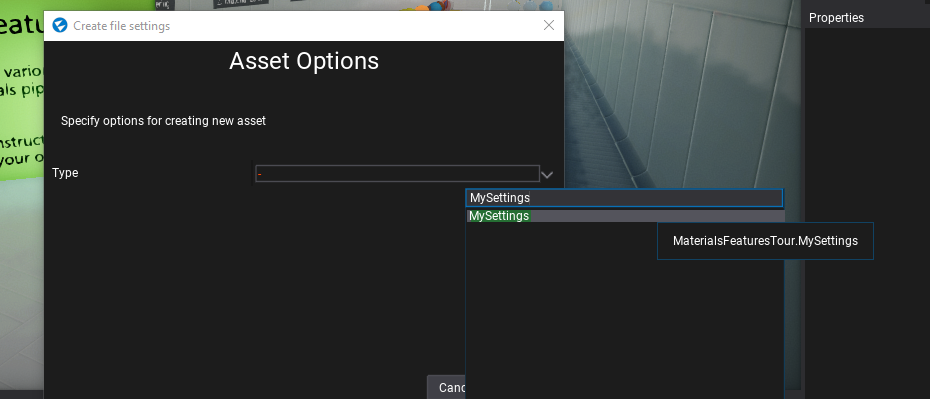

HOWTO: Use Custom Settings
Custom Settings are the easiest way to extend the default game configuration by adding own data components that define the game configuration. Also, it's a very unified way for plugins to inject custom options into the game. In this tutorial, you will learn how to define, create and use custom settings right in your game or a plugin.
To learn more about custom settings see related page here.
1. Define custom settings data object
The first step is to prepare the actual layout for the custom settings. Flax uses C# objects that are a very good way to define data, serialize, and access from C# code. Here is a sample class that defines a set of settings used by the example game. Create this class in your game project (Game project).
public class MySettings
{
public float Speed = 2.0f;
}
2. Create settings in Editor
Next step is to create an actual asset (.json file) that contains settings.
In project Content use right-click and use option New -> Json Asset.
Then specify it's name and pick the type to created class typename (in this example it's MySettings).
Press Create button to make a file with default values of the type.

Also, you can use your script code (Start method), a custom editor, or a custom editor window to do it.
#if FLAX_EDITOR
var path = Path.Combine(Globals.ProjectContentFolder, "mySetitng.json");
FlaxEditor.Editor.SaveJsonAsset(path, new MySettings());
GameSettings.SetCustomSettings("MyPlugin", Content.LoadAsync<JsonAsset>(path));
#endif
The sample code creates a new settigns asset in Content folder named myPluginSettings.json.
Note: if you are developing a plugin you can create a default plugin settings asset and ship it with the plugin so it can be used to adjust plugin options in the project that uses it.
3. Edit settings in Editor
Now you can use Flax Editor to open and edit the settings. Simply double click on an asset in the Content Window to open the editor window and modify the settings.
4. Access settings at runtime
Custom Settings can be accessed at runtime via Engine.GetCustomSettings method that returns the JsonAsset linked by the given key (this example code uses key MyPlugin).
var settings = Engine.GetCustomSettings("MyPlugin");
if (settings)
{
Debug.Log("Settings: " + settings.CreateInstance<MySettings>().Speed);
}